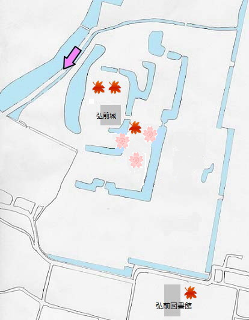

は春に撮影、は秋に撮影された写真です。
弘前城
青森県弘前市弘前公園内にある江戸期の城です。
戦国の末、津軽地方を平定した津軽為信は関ヶ原の戦いにて地歩を固め、
高岡(現：弘前)への移転を計画しましたがその途中で没しました。
その遺志を継いだ三男の信牧が1610年(慶長15年)に着工し翌年に完成させました。
弘前公園
弘前城が廃城後津軽氏が整備し、一般公開された市民公園です。
現在は弘前市が所有、管理しています。
1903年(明治36年)以降、桜の植樹が行われ、現在の桜の木は約2600本
東北地方北部に位置する為、桜の開花時期は比較的遅くなっています。
「弘前さくらまつり」は毎年4/23～5/5に開かれており、日本全国からの観光客で賑わいます。
弘前城の桜は日本さくら名所100選にも選ばれています。
また、本丸・北の郭、弘前城植物園が有料区域となっています。
青森在住の小中学生と65歳以上の方は無料で見ることが可能です。
本丸・北の郭の会場時間は9時から17時（4月23日から5月5日までは、7時から21時まで
弘前城植物園は4月中旬から11月23日の9時から17時まで開園となっています。
料金は大人300円小人100円、共通入場券大人500円小人160円です。